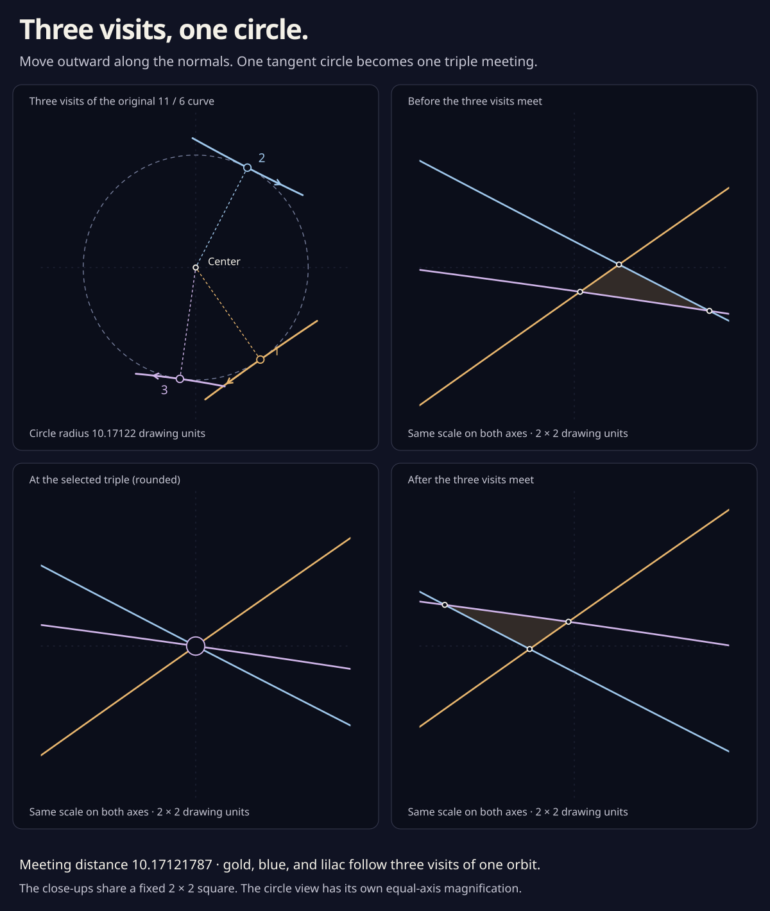

Three visits, one circle.
Three short pieces of the same curve touch one circle. Move every point outward, perpendicular to its direction of travel. After the circle’s radius, its three visits meet at the center. A little triangle changes sides.
The whole drawing moves the same distance along its outward normals. This slider explores a small interval around one selected meeting. Nothing animates.
- Outward distance · drawing units
- Distance beyond the meeting
- Small triangle area · square units

Why do three points meet at a circle’s center?
A left normal is the travel direction turned a quarter-turn counterclockwise. The outward offset moves a point in the opposite direction: qM = q − M N, with N the unit left normal. At these three visits, the radii from the circle’s center point along their left normals. Subtracting one radius therefore takes each point to that same center.
The curve’s positive curvature keeps its offset velocity nonzero: qM′ = (1 + Mκ) q′. Each visit keeps traveling in its original direction. The three directions differ, so this event is a triple passage. For two branches facing opposite ways, an outward offset can instead create an inverse touch.
Why does the triangle vanish so quickly?
Its area shrinks like the square of the distance from the meeting: A ≈ Kδ², with δ the extra outward distance and K about 3.84569744. Halving a sufficiently small distance leaves about a quarter of the area. The same leading coefficient works on both sides.
At this setting, area divided by squared distance is . At the meeting itself the triangle has zero area; the ratio is replaced by its limiting value. The limit is certified from the three branch normals, independently of the displayed finite triangles. Follow the area calculation ↗.
What is certified in this close-up?
Rational bounds prove one ordinary triple at an outward distance strictly between 10.17121 and 10.17123. Its three visits are near 3.50%, 15.40%, and 93.52% of the original orbit. The displayed circle, curves, crossings, and area use rounded numerical coordinates.
A whole-orbit rational cover excludes every other branch from the fixed viewing square throughout this slider’s interval. An additional four-variable calculation proves exactly one triple and no self-tangency inside the square over that entire interval. This selected passage decreases strangeness by one. These proofs do not classify events elsewhere on the curve or on the rest of its outward journey. Read the circle and window proofs ↗.
How much happens on the way out?
Quite a lot. Each of the 11 / 6 and 11 / 8 drawings starts with forty crossings. Far outward, each has 106 crossing pairs, with exactly 33 inverse pair-births on the way. The crossing-count graph follows those births.

The order of crossing visits changes too. Its strangeness goes from 15 to −87 for 11 / 6, and from 11 to −101 for 11 / 8. A generic outward journey continued sufficiently far therefore needs at least 102 and 112 triple passages. The selected meeting above is one piece of that longer story; those bounds do not locate or count all its other triples.
The earlier front-move construction, taken at a sufficiently large common offset, has exactly 722 triples in its middle. Its full route needs at least 992: selected positive passages force other passages to bring the count back down. Four signs agree follows one fourfold's four positive triples; a standalone diagram shows its circle and the signed balance. This argument supplies no numerical offset threshold for the middle-event conclusion. Follow the radial-word calculation ↗.